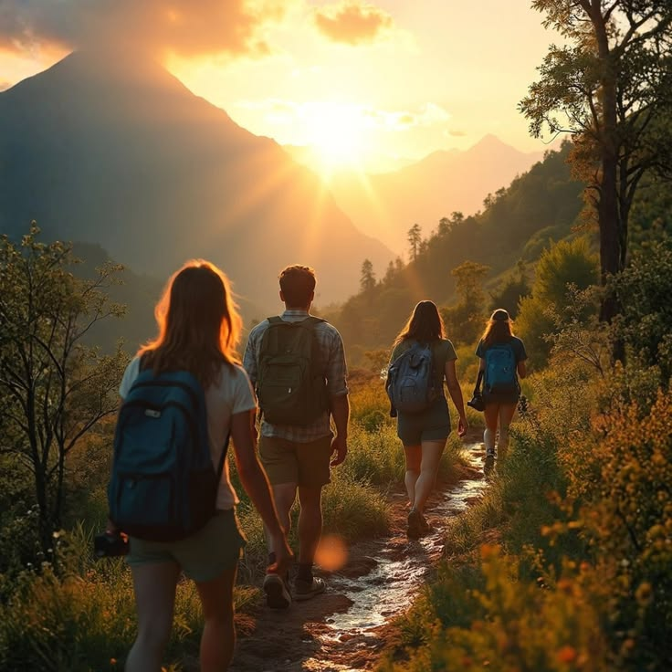
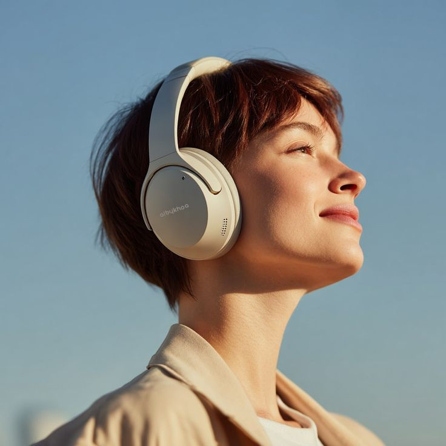

Платформа гео-подкастов: аудио-экскурсии по открытым выставкам и историческим площадям мира. Нужный трек включается сам — по вашим GPS-координатам.
Выбрать маршрут01 · О нас · миссия · история
Миссия. Сделать так, чтобы город не просто фотографировали, а слушали: каждая площадь и уличная выставка рассказывает о себе в тот момент, когда вы рядом.
История. В 2024 году звукорежиссёр Иван Исаев стоял на старой площади среди сотен телефонов и понял: у каждого камня есть голос, который никто не включил. Так родился первый маршрут.
02 · Команда
Записывает голоса площадей и пишет сценарии каждого подкаста.
Отвечает за то, чтобы нужный трек включался ровно в нужной точке.
Договаривается с художниками и находит самые живые уличные выставки.
03 · О проекте
«Площадь искусств» — приложение, которое превращает прогулку в спектакль. Вы входите на площадь или к уличной выставке, и в наушниках сам начинается подкаст именно об этом месте.
04 · Философия
05 · Для кого

Хотят понять город, а не просто отметить его в списке.
Дизайнеры, архитекторы и искусствоведы ищут живые референсы.
Открывают знакомый двор по-новому по дороге на работу.

Ценят истории, которые можно слушать на ходу.